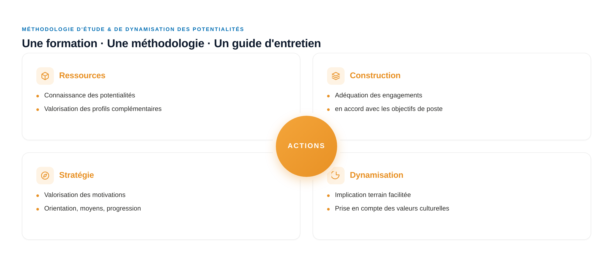
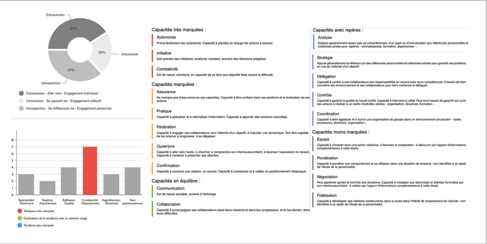

The methodology.
Going beyond a pre-built image of a personality.
Major Exchanges reduces the subjectivity of a personality and motivation study.
It structures information through the use of a methodology and an interview guide, while guaranteeing the HR expert's opinion.
The result: finer studies, more comparable from one candidate to another, directly actionable for recruitment, mobility or coaching.

Personality chart — multi-level reading of a study
Advance · Guarantee · Differentiate.
Central predispositions that drive, secure or differentiate action.
Three complementary interactive commitments that condition the quality of involvement: investment, relationship, character, management, business, security.

Eight dimensions
mapped.
Involvement, relationship, character, reflection, organization, business, management, emotions. The eight dimensions of the rosette are assessed independently then cross-referenced to produce a multi-level reading of personality.
Each dimension is then broken down into six operational criteria, for a total of 48 criteria — the matrix used to validate the fit between a person and the requirements of a position or mission.

Five levels,
one central engine.
Major Exchanges studies the interactions between a person and their professional environment. Five distinct levels are analyzed and articulated around a central engine: the Drive — a structured approach rare on the behavioral HR assessment market.
Integration
The anchoring of the person in their professional and collective environment. The ability to fit into a framework, rules, relationships.
Motivation
The deep levers that sustain engagement. The sources of personal energy that direct action over time.
Organization
The structuring of action — method, priorities, time management. The ability to articulate means and ends.
Predisposition
Natural dispositions, inclinations. The areas where the person spontaneously deploys their abilities.
Drive
The central engine. The force that sets the four other levels in motion and gives coherence to the whole.

A visual reading of personality.
Each study is delivered in a synthetic graphic and written form. The objective: to ease reading for managers and beneficiaries alike.

Understand · Structure · Energize.
Major Exchanges training is built on three phases.
Understand
Emotional footprint. Profiling on 10,000 profiles. Cross-referenced study. Matrix validation of requirements.
4 modulesStructure
Definition of requirements. Communication as a means. Influence dynamics. Onboarding the team member.
4 modulesEnergize
Team building. Complementarity and synergy. Acceptance of differences. Optimization through recognition.
4 modules